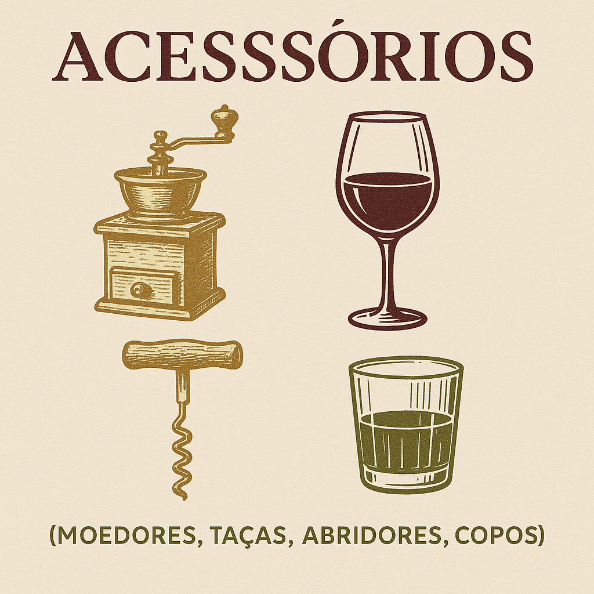

Seja bem vindo ao maior site de bebidas artesanais do Brasil! Nós da Barrica & Aroma prezamos pela qualidade e origem de nossos produtos, pois são os "sabores que contam histórias". Aventure-se pelo nosso catalogo das mais diversas bebidas:
| Cafés |
| - |
Ingredientes |
Origem |
| Grãos |
Grãos de café inteiro e água filtrada
|
A torra e moagem de grãos inteiros é uma prática que remonta às origens do próprio consumo de café, que começou na Etiópia, por volta do século IX. Conta a lenda que um pastor chamado Kaldi percebeu que suas cabras ficavam mais enérgicas após comerem os frutos do cafeeiro. A bebida foi se desenvolvendo ao longo dos séculos e, ao chegar ao mundo árabe, especialmente no Iêmen (século XV), os grãos passaram a ser torrados e moídos antes do preparo. Esse método artesanal e fresco sobrevive até hoje como uma forma premium de consumo.
|
| Moídos |
Café moído e água filtrada
|
A moagem prévia dos grãos começou a se popularizar com a industrialização e comercialização em massa do café, a partir do século XIX. No entanto, a prática de moer os grãos já era feita nas casas desde os tempos do Império Otomano (século XVI), com moedores manuais. A inovação veio quando empresas como a Folgers (EUA, 1850s) e a Melitta (Alemanha, início do século XX) começaram a vender café já moído para facilitar o preparo doméstico. Isso revolucionou o acesso ao café para as massas.
|
| Cold Brew |
Café moído grosso, água fria ou em temperatura ambiente e gelo
|
Apesar de parecer uma moda recente, o cold brew tem raízes antigas. Acredita-se que a origem seja japonesa, no século XVII, com uma técnica chamada "Kyoto-style coffee", em que o café era extraído gota a gota com água fria, principalmente por monges budistas e comerciantes. A técnica viajou com marinheiros holandeses que buscavam métodos práticos para preparar café durante longas viagens. A popularização moderna, porém, aconteceu no século XXI, especialmente nos EUA, com o crescimento das cafeterias "third wave".
|
| Cervejas Artesanais |
| - |
Ingredientes |
Origem |
| IPA (India Pale Ale) |
Malte de cevada, lúpulo, levedura de ale, água, frutas cítricas (opcional)
|
A IPA surgiu na Inglaterra no século XVIII como uma solução para conservar a cerveja durante as longas viagens até as colônias britânicas na Índia. Para evitar que a bebida estragasse no caminho, os cervejeiros aumentaram a quantidade de lúpulo e o teor alcoólico, aproveitando suas propriedades conservantes. No século XXI, o estilo foi reinventado nos Estados Unidos, ganhando versões mais aromáticas, cítricas e ousadas.
|
| Stout |
Malte de cevada torrado, lúpulo, levedura de ale, água, aveia (opcional), lactose (opcional), café (opcional), cacau (opcional), baunilha (opcional)
|
A Stout nasceu no século XVIII, na Inglaterra, como uma variação mais forte e encorpada da Porter, uma cerveja escura popular entre os trabalhadores. O termo “stout” originalmente significava apenas "forte". O estilo se consolidou na Irlanda, especialmente com a fundação da cervejaria Guinness em 1759, que transformou a stout em um símbolo nacional com seu perfil torrado e denso.
|
| Sour |
Malte leve, lúpulo, levedura, bactérias (Lactobacillus, Brettanomyces, Pediococcus), água, frutas (opcional)
|
As cervejas sour têm origem na Europa continental, especialmente na Bélgica e na Alemanha, e são consideradas um dos estilos mais antigos do mundo. Antes da pasteurização e do controle microbiológico, toda cerveja era naturalmente ácida devido à ação de leveduras selvagens e bactérias. Com o tempo, estilos como Lambic, Gueuze, Berliner Weisse e Gose se desenvolveram, cada um com características ácidas únicas. Hoje, as sours ganharam nova vida na cena artesanal, com adição de frutas e experimentações.
|
Além de oferecemos uma vasta gama de bebidas, também temos nossa seção de acessórios para os degustadores mais alto nível!

| Acessórios |
| - |
Função |
Variedades |
| Moedores de Café |
Moer grãos na hora, garantindo frescor e aroma. |
Manual (moinho), Elétrico, Lâmina e Rebarba |
| Cafeteiras e Filtros |
Preparação de café |
Hario V60, Chemex, Prensa Francesa, Aeropress e Italianas (Moka) |
| Balança e Termômetro |
Usados para dosagem precisa e controle da temperatura da água, que afeta a extração. |
Materiais comuns |
| Copos e Taças Específicas |
Cada estilo de cerveja é melhor apreciado em um tipo de copo. |
Pint, taça snifter, copo Weizen e Tulipa |